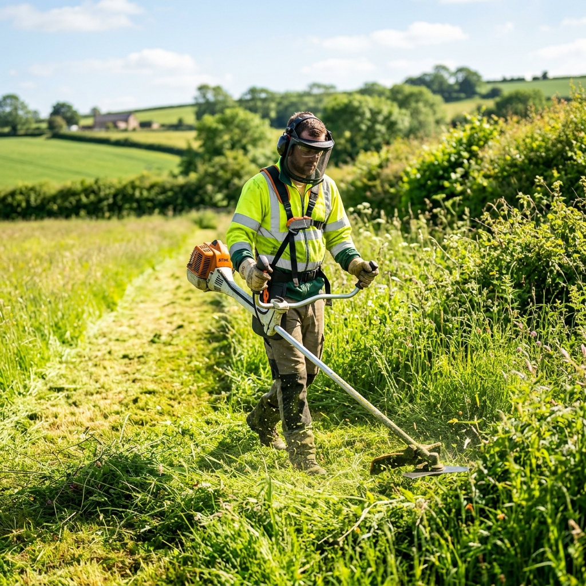

Limpeza de Terrenos Rápida e Profissional
Especialista em limpeza de pequenos e médios terrenos com roçadora. Trabalho rigoroso e eficiente.

Rápido e Eficiente
Máximo rendimento no terreno para que não perca tempo.
Preços Acessíveis
Qualidade profissional com um custo justo para o seu bolso.
Ideal para Terrenos Pequenos
Especializado no cuidado de quintais e terrenos de média dimensão.
Atendimento Local
Rapidez na deslocação e conhecimento da realidade local.
Renato Esteves
Sou um profissional dedicado ao cuidado da terra. Com anos de experiência no setor agrícola, foco-me em oferecer um serviço de limpeza de terrenos de alta qualidade, utilizando ferramentas profissionais para garantir um acabamento impecável.
O meu objetivo é ajudar os proprietários locais a manterem os seus terrenos seguros, limpos e organizados durante todo o ano.
Serviços Disponíveis
Tudo o que o seu terreno precisa para estar em perfeitas condições.
Limpeza de Mato
Eliminação de vegetação densa, arbustos e matagal acumulado.
Manutenção de Terrenos
Plano regular de corte para evitar o crescimento excessivo de ervas.
Corte com Roçadora
Corte preciso em zonas de difícil acesso ou com árvores.
Garanta já a limpeza do seu terreno.
Peça um orçamento gratuito ou ligue diretamente.